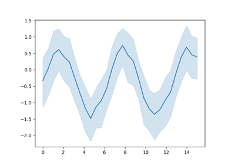
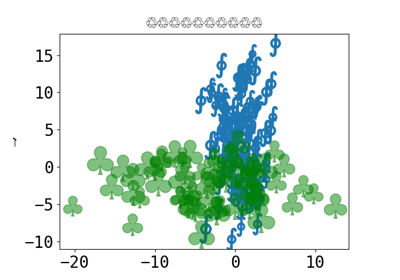
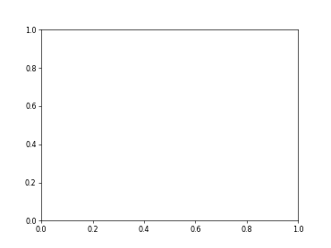

Matplotlib Gallery (and basics)#
This page consists of the ‘General example’ gallery and a sub-gallery, ‘No image output examples’. This sub-gallery is generated from a sub-directory within the general examples directory. The file structure of this gallery looks like this:
examples/ # base 'Gallery of Examples' directory
├── README.txt
├── <.py files>
└── no_output/ # generates the 'No image output examples' sub-gallery
├── README.txt
└── <.py files>
General examples#
This gallery consists of introductory examples and examples demonstrating specific features of Sphinx-Gallery.

Introductory example - Plotting sin
Introductory example - Plotting sin


Seaborn example
Capturing output representations
Capturing output representations
Choosing the thumbnail figure


Using Unicode everywhere ü§ó



Matplotlib animation support
No image output examples#
This section gathers examples which don’t produce any figures. Some examples only output to standard output, others demonstrate how Sphinx-Gallery handles examples with errors.